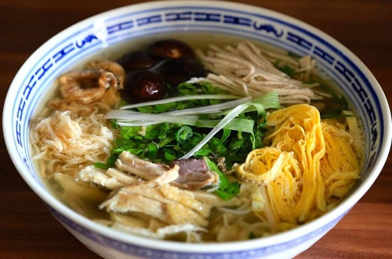

Là món ăn cầu kỳ, tinh tế, thể hiện phong cách thanh nhã của ẩm thực Hà thành, bún thang Hà Nội có sự kết hợp hoàn hảo giữa sắc, hương và vị. Được ví như “bông hoa ngũ sắc”, bún thang sẽ hấp dẫn thực khách ngay từ ánh nhìn đầu tiên.
Chẳng biết từ bao giờ, người ta nghĩ ra cách ghép tên địa danh cùng món ăn để gọi một thức quà quê thơm ngon hay một đặc sản nổi tiếng như: bún thang Hà Nội, bánh cáy Thái Bình, bánh đậu xanh Hải Dương, bánh đa cua Hải Phòng, kẹo cu đơ Hà Tĩnh… Có lẽ đó là cách tạo dựng thương hiệu cho những món ngon được sản sinh ra từ các vùng đất ấy. Bởi mỗi nơi, mỗi xứ sở đều có phong cách ẩm thực của riêng mình. Nếu xét về độ tinh tế, cầu kỳ và đẹp mắt thì có lẽ bún thang Hà Nội xứng đáng xếp trong hàng ngũ bậc nhất.
Những mảng màu hấp dẫnTừ bao đời nay, ẩm thực Hà Nội đã ghi dấu bởi sự tinh tế, ý nhị cả trong cách chế biến, thưởng thức lẫn tấm lòng của người trao - kẻ nhận. Như phở, món ăn “quốc hồn quốc túy” có mặt ở khắp Việt Nam nhưng chỉ có phở ở Hà Nội mới được đánh giá là ngon nhất. Nói đến ẩm thực Hà Nội, ngoài phở, sẽ là điều thiếu sót nếu không nhắc đến bát bún thang.
Trước đây, người dân Hà Nội chỉ có cơ hội thưởng thức bún thang vào các dịp đặc biệt như lễ hóa vàng ngày Tết. Ngày nay, dù không còn đầy đủ các nguyên liệu truyền thống như xưa nhưng bún thang Hà Nội vẫn là món ăn thanh nhã, tinh tế bậc nhất của ẩm thực Hà thành được nhiều người sành ăn cũng như du khách yêu thích.
Là một món ăn lâu đời của người Hà Nội, bún thang đặc biệt từ tên gọi đến cách chế biến. Xưa kia, những người phụ nữ Hà thành đã khéo léo tận dụng những thực phẩm còn lại từ Tết Nguyên đán, kết hợp lại cho ra một món ăn “mới” vừa ngon, vừa tiết kiệm. Sở dĩ gọi là bún thang vì từ “thang” để chỉ nhiều thành phần cùng phối hợp, như thang thuốc Đông y.
Cũng có nhà nghiên cứu ẩm thực cho rằng từ “thang” trong tiếng Hán nghĩa là canh, “bún thang” nghĩa là “bún chan bởi canh”. Do đó, nguồn gốc của bún thang cũng có thể bắt nguồn từ món canh thượng thang của người Hà Nội xưa. Có thể giải thích nguồn gốc tên gọi “bún thang” theo nhiều cách khác nhau, nhưng sẽ chỉ có một từ để nói lên sự hấp dẫn, quyến rũ riêng của món ăn này, đó là “Tuyệt vời!”.
Làm từ thực phẩm còn dư ngày Tết, nên bát bun thang có mỗi thứ một chút, thậm chí là vụn vặt. Vì thế, để “chuẩn hóa hình dạng” nguyên liệu nấu bún thang, những phụ nữ Hà Nội đã mang đồ ăn ra thái chỉ hoặc xé nhỏ. Nhờ đó, bún thang rất đa sắc, đa vị.
Nhà văn Vũ Bằng từng nhận xét: “Nhìn bát phở cho ta cảm giác của bức họa tập thể bạo màu thì quan sát tô bún thang cho ta cái cảm giác đang được ngắm bức tranh phong cảnh trong trẻo của sông Stêbơn mà ở đó những mảng màu nguyên chất được đặt gần nhau chứ không pha lẫn”.
